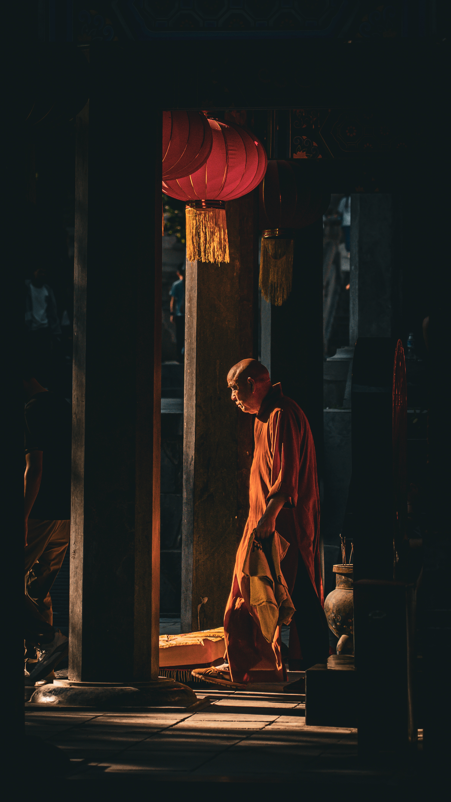
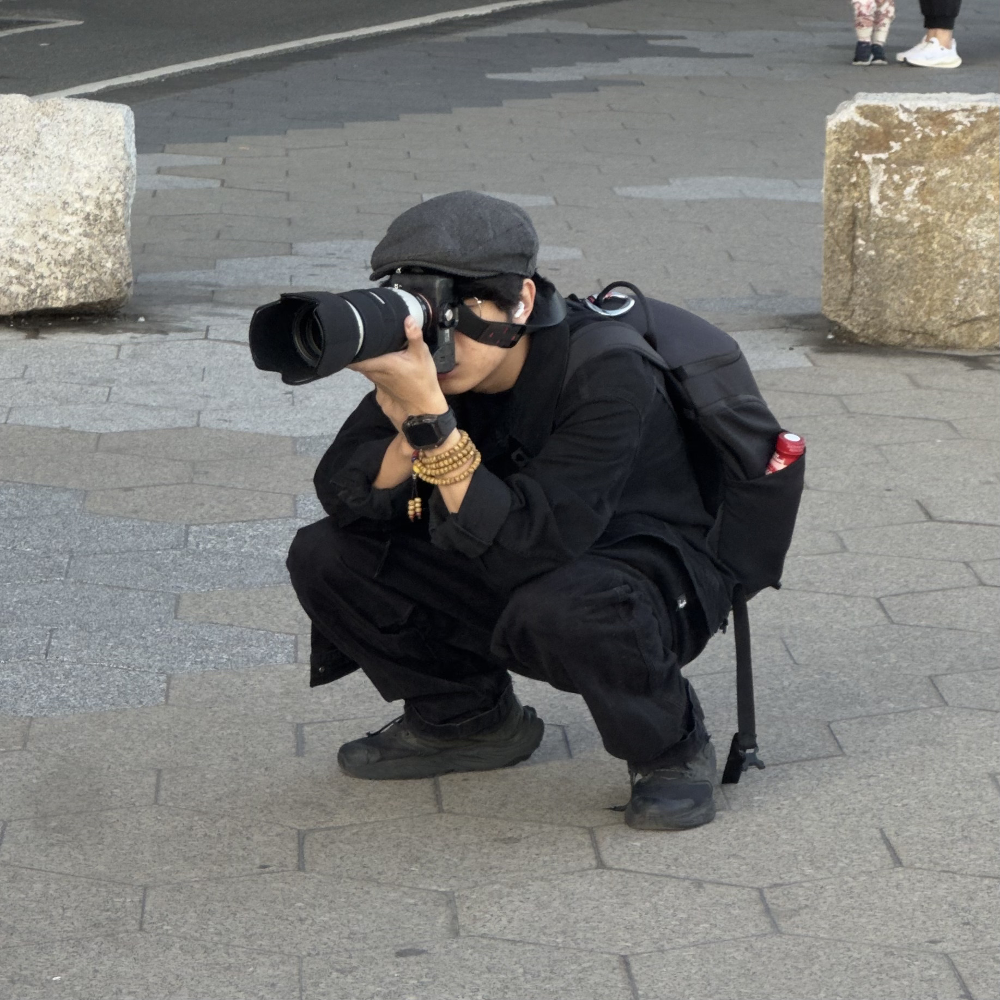

Documenting life
as it unfolds.
Honest perspectives,
raw memories,
and the quiet beauty of existence.

RUILIN MAO 摄影
Honest perspectives,
raw memories,
and the quiet beauty of existence.




I am Ruilin Mao, an independent photographer dedicated to capturing the raw traces of life and quiet, transient moments. When pressing the shutter, I seek no deliberate embellishment, but rather an honest narrative told through the natural flow of light and shadow.
Deeply influenced by minimalism, my visual language is a constant practice of subtraction amidst a complex world. Whether exploring vast natural landscapes, observing strangers in fleeting street encounters, or freezing the raw emotions beneath a gaze, I strive to find a static, lingering power that compels the viewer to pause and reflect.
Fine Art / Landscape
Street & Documentary
Humanistic Portraiture
China / Available Worldwide